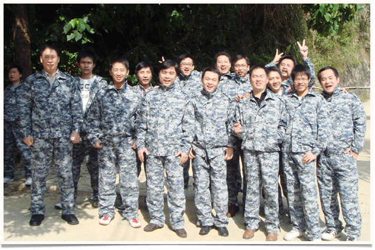

管理团队

陈伟山，总裁兼CEO
2004年，领导创办了TimeLink 公司。他的网名：天行(TianXing)，给人留下深刻印象，互联网中仍然有大量关于他的报道。经过多年的管理和经营，他引领了一批高素质的团队。在他的领导下，团队一直致力推动高新技术的发展并应用到生活中。科技闪耀生活的理念，正是他领导的TimeLink Inc.团队的追求的目标。
在领导TimeLink之前（Before Leading TimeLink）
1998年在中国电信工作，是中国电信的工程师。
教育(Launching His Career Education)
1998年毕业于福建省邮电学校(FuJian Post & Telecom School),程控交换(Stored Program Control Exchange)专业。
业余爱好（Outside the Office）
他喜欢天文，TKD，Golf，他拥有一个小型的天文望远镜。
他的个人网站是：http://www.tianxing.org。

阎广林，总工程师（Engineer General），创办者之一
他是中国人民解放军某部高级军官，是技术和管理复合型领导，拥有三十多年的军旅生涯，在解放军某部从事通讯工程研究和管理工作，在通信、网络、信号处理等领域有着丰富的经验。在他的领导下，TimeLink Inc.拥有了一支富有创新能力，高素质的研发队伍，先后攻克了多项关键性技术，奠定了TimeLink Inc.的产品核心基础。
在领导TimeLink之前（Before Leading TimeLink ）
年轻的团队
